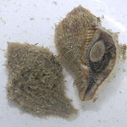

|
|
| shelled snails text index | photo index |
| Phylum Mollusca > Class Gastropoda |
| Triton
snails Family Ranellidae updated Sep 2020 Where seen? The commonly seen triton snail is rather small and boring. It is usually found under stones on our Northern shores. Features: The larger species of triton snails are more famous. They can grow to 50cm up to 1m long! Many of them have a hairy covering on the shell. The operculum is made of a horn-like material and is thick and brown. They are found in sandy and rocky habitats, many are only found offshore in deeper waters. They were previously placed in Family Cymatiidae. What do they eat? Some large tritons eat living sea stars and sea cucumbers. Others may prey on other snails and on clams, or ascidians, sponges, hydroids. The prey is often first paralysed with an acidic salivary secretion before it is devoured. They may spray or inject an anaesthetic to paralyse their prey. Some tear off bits of flesh with their radula, while others liquify the prey's flesh then suck up the soup with their proboscis. Human uses: In the past, large specimens were used a trumpets. Thus another common name for them is Trumpet shells. |
| Some Triton snails on Singapore shores |
 Common triton snail |
 Leopard triton snail |
| Family
Ranellidae recorded for Singapore from Tan Siong Kiat and Henrietta P. M. Woo, 2010 Preliminary Checklist of The Molluscs of Singapore. ^from WORMS +Other additions (Singapore Biodiversity Records, etc)
|
|
Links
References
|